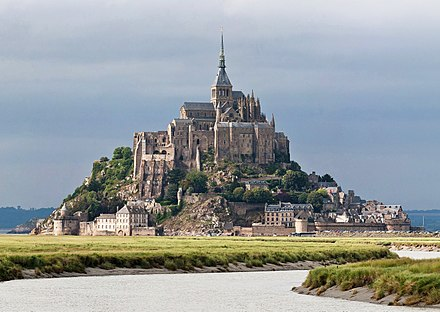
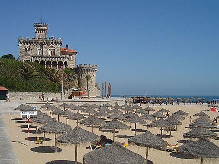

Bem-vindo(a) a Traveling, vamos viajar?
Alguns destinos disponíveis:
- França 
- Grécia

- Barcelona

- Portugal 
Sobre nós
A Traveling é uma empresa que têm o objetivo de proporcionar a melhor experiência de viagem para a Europa da sua vida. Vamos reserva a sua hospedagem, compramos a sua passagem, mostramos os melhores locais para você visitar e ainda provamos que a Europa é o destino perfeito para quem ama viajar.